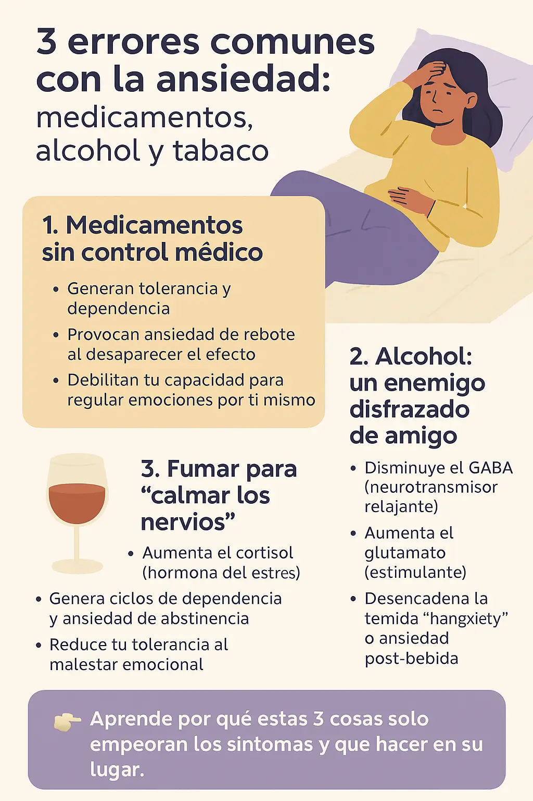

3 errores comunes con la ansiedad: medicamentos, alcohol y tabaco
Cuando la ansiedad se vuelve abrumadora, es común buscar alivio rápido. Sin embargo, algunas soluciones inmediatas pueden convertirse en errores graves a largo plazo. Aquí te explicamos por qué los medicamentos sin supervisión, el alcohol y fumar pueden empeorar tu ansiedad con el tiempo.
1. Medicamentos sin control médico
Algunos medicamentos como las benzodiacepinas (diazepam, lorazepam) calman rápidamente, pero:
- Generan tolerancia y dependencia
- Provocan ansiedad de rebote al desaparecer el efecto
- Debilitan tu capacidad para regular emociones por ti mismo
¿Sabías que…? El uso prolongado puede dificultar el sueño, alterar la memoria y causar mayor ansiedad al suspenderlos sin supervisión.
2. Alcohol: un enemigo disfrazado de amigo
El alcohol actúa como depresor del sistema nervioso, generando una falsa sensación de tranquilidad. Pero al pasar su efecto:
- Disminuye el GABA (neurotransmisor relajante)
- Aumenta el glutamato (estimulante)
- Desencadena la temida “hangxiety” o ansiedad post-bebida
Además, interfiere con el sueño profundo y deshidrata, agravando los síntomas físicos de ansiedad como palpitaciones, mareos y fatiga.
3. Fumar para “calmar los nervios”
La nicotina activa el sistema dopaminérgico y da placer inmediato, pero su retirada rápida:
- Aumenta el cortisol (hormona del estrés)
- Genera ciclos de dependencia y ansiedad de abstinencia
- Reduce tu tolerancia al malestar emocional
¿Entonces, qué puedes hacer en lugar de eso?
Estas estrategias pueden ayudarte a recuperar el control sin recurrir a sustancias:
- Respiración consciente para bajar el ritmo cardíaco
- Ejercicios mentales rápidos para momentos de urgencia
- Escribir un diario para liberar pensamientos repetitivos
- Afirmaciones positivas para combatir pensamientos intrusivos
- Hábitos saludables diarios para crear resiliencia emocional